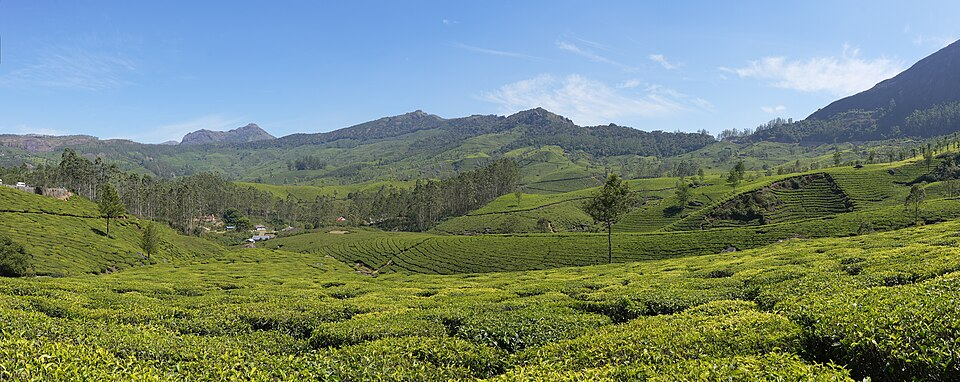

Kerala Stop 3
Kerala
Southwest India — God's Own Country
Flanked by the Arabian Sea to the west and the Western Ghats to the east, Kerala is a lush tropical paradise. Its legendary backwaters — a network of lagoons, lakes, and canals — are best explored on a traditional houseboat. Kerala is also famous for Ayurvedic treatments, Kathakali dance, and spice plantations.

Alleppey Backwaters
Drift through serene canals lined with coconut palms on a traditional Kerala houseboat.

Munnar Tea Plantations
Munnar sits at 1,600 m above sea level, draped in rolling emerald tea gardens.
Quick Facts
- Nickname: God's Own Country
- Capital: Thiruvananthapuram
- About 900 km of backwater canals
- Famous for: Ayurveda, Kathakali, spices
- Highest literacy rate in India (~96%)
- Home to Periyar Tiger Reserve